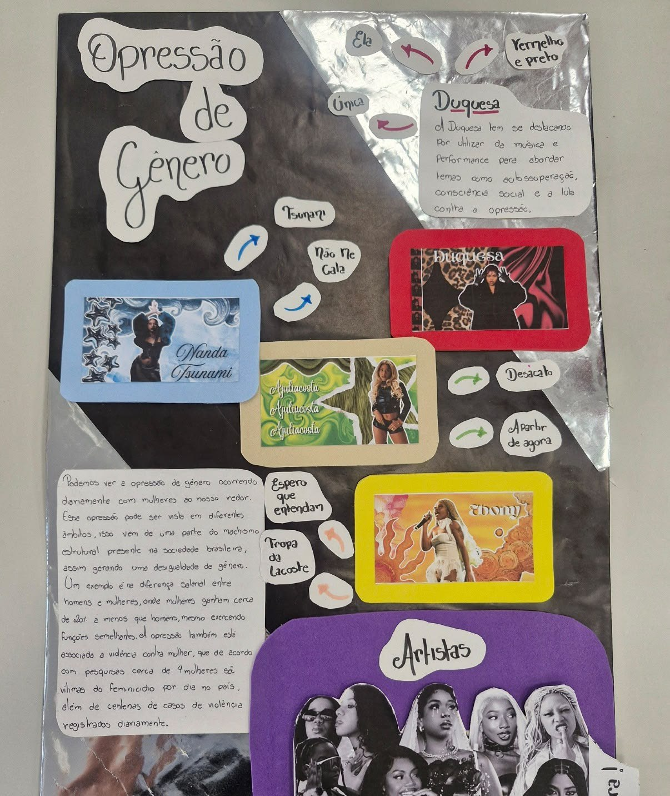

O que estudei
- Opressões estruturais na sociedade
- Leis como instrumento de mudança social
Opressões estruturais são desigualdades que não dependem só da atitude de uma pessoa: estão no funcionamento das instituições, do mercado de trabalho e da cultura. O racismo estrutural e a desigualdade de gênero no acesso a empregos e salários são exemplos.
Uma forma de enfrentar esses problemas é por meio de políticas públicas e leis, que mudam as regras que valem para todos.
A Sociologia também estuda as instituições (família, escola, Estado, mercado de trabalho) e como elas reproduzem ou combatem desigualdades. As cotas em universidades e as leis contra a discriminação são exemplos de políticas criadas para reduzir opressões estruturais.
Atividades e trabalhos
- Cartaz Manifesto: Opressões Estruturais
- Atividade Final: Projeto de Lei
O cartaz manifesto tratou da opressão de gênero: falou de machismo estrutural, diferença salarial e violência contra a mulher, e trouxe músicas de artistas como Duquesa, Nanda Tsunami, Ajuliacosta e Ebony. No projeto de lei, o desafio foi transformar a crítica em proposta: escrever uma lei que ajudasse a resolver um problema social.
Para o projeto de lei, foi preciso seguir a estrutura de um texto legal: justificativa (por que a lei é necessária), artigos (o que ela determina) e forma de aplicação. Isso mostrou como funciona, na prática, o processo legislativo.
Evidências da aprendizagem
O cartaz e o projeto de lei foram entregues na plataforma de tarefas do Senac.


Minha reflexão
Passar da crítica para uma proposta concreta foi a parte mais interessante, porque exige pensar em como a mudança funcionaria na prática.
Para quem quer ter uma empresa, como eu, esse tema é importante: uma empresa também é uma instituição e pode contribuir para reduzir desigualdades, por exemplo, com contratações justas e um ambiente de trabalho respeitoso.